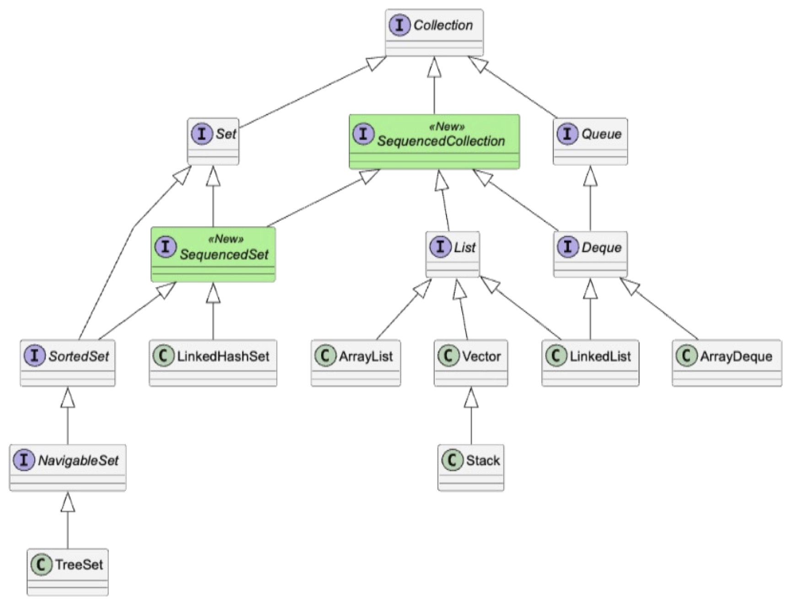
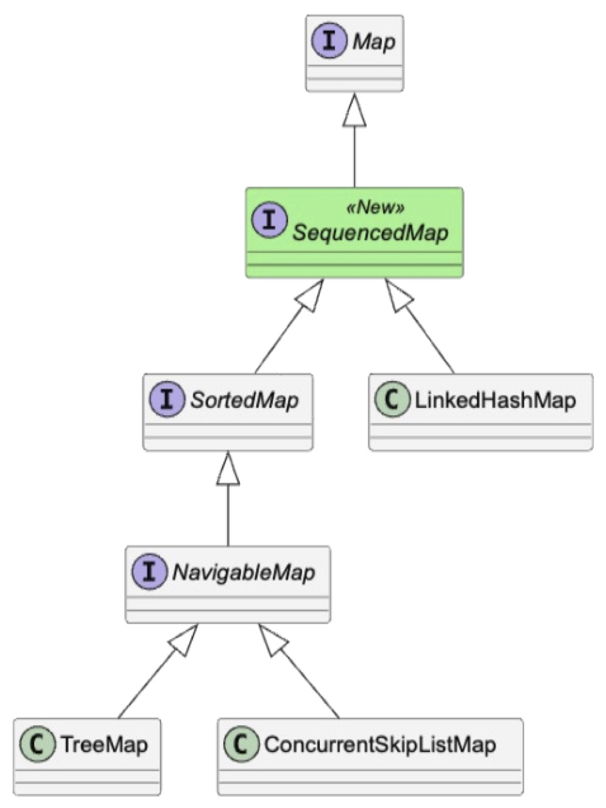
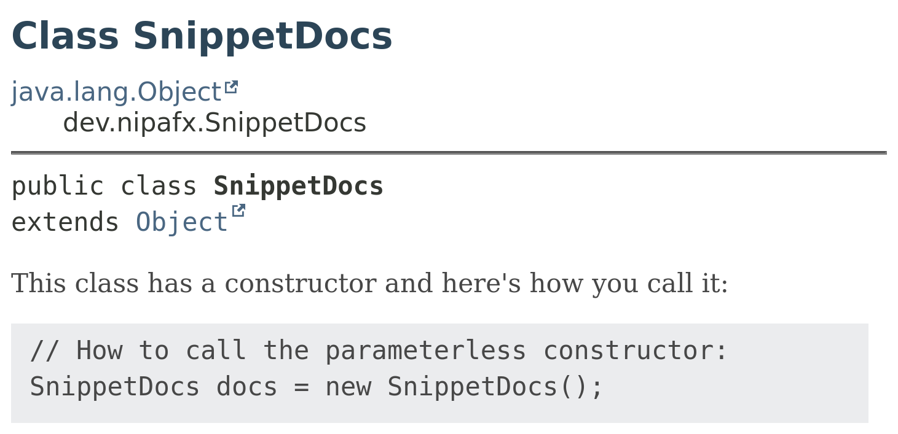

enum Drug { PARACETAMOL, IBUPROFEN, CAFFEINE }
sealed interface Dosage permits Tablet, Infusion { }
record Tablet(int morning, int midday, int evening)
implements Dosage { }
record Infusion(int speed, int duration)
implements Dosage { }
record Medication(Drug drug, Dosage dosage) { }
record MedicationPlan(
String patientName,
List<Medication> medications) { }Modern Java in Practice
The Features That Matter
A bit different
JDK 27 was released in September:
jdk.java.net/27
This session:
goes over Java 18 to 28
sometimes deep, sometimes wide
Ask questions at any time!
Show of hands
Which Java versions
do you run in production?
Table of Content
| Data-Oriented Programming |
| Faster Applications |
| On-Ramp and Fast Lane |
| Quantum Security |
| Removing the Cruft |
| Scalable and Maintainable |
| Stream Gatherers, Sequenced Collections, … |
| Flight Recorder and Other Tools |
This & More
Slides at slides.nipafx.dev/java-17+ (⇝ hit "?")
More:
Modern Java in Practice
| Data-Oriented Programming |
| Faster Applications |
| On-Ramp and Fast Lane |
| Quantum Security |
| Removing the Cruft |
| Scalable and Maintainable |
| Stream Gatherers, Sequenced Collections, … |
| Flight Recorder and Other Tools |
Let’s introduce our example
Inspired by
The Model in Code
Heavily using modern Java features: Records, Sealed Classes, …
Data-Oriented Programming
Data comes first:
model it precisely, immutably, transparentlyOperations come second:
separate functions from data to dataPrograms are production lines (batch processing):
data flows in, gets transformed, flows out
Java’s Toolbox for DOP
Three language features fit the diagram:
Records ⇝ data as data (product types)
Tablet, Infusion, Medication, MedicationPlan
Sealed types ⇝ alternatives (sum types)
Dosage
Pattern matching ⇝ operations on data
e.g. describe(Dosage)
Let’s take them apart, one by one.
The Classic switch
String categoryOld(Drug drug) {
String category;
switch (drug) {
case PARACETAMOL:
case IBUPROFEN:
category = "painkiller";
break;
case CAFFEINE:
category = "stimulant";
break;
default:
category = "unknown";
}
return category;
}A statement: mutable variable, break, fall-through
default hides cases that are added later
Switch Expressions
String category(Drug drug) {
return switch (drug) {
case PARACETAMOL, IBUPROFEN -> "painkiller";
case CAFFEINE -> "stimulant";
};
}An expression: it yields a value
No fall-through, no
breakExhaustive: no
defaultneeded ⇝
newDrug? Compile error!
Records: Data Carriers
var tablet = new Tablet(1, 0, 1);
tablet.morning(); // 1
tablet.equals(new Tablet(1, 0, 1)); // true
tablet.toString(); // Tablet[morning=1, midday=0, evening=1]
// immutable: "changing" means creating a new one
var withMidday = new Tablet(
tablet.morning(), 1, tablet.evening());Transparent: the state is the components
Immutable: no setters, final fields
Constructor, accessors,
equals,hashCode,toString⇝ for free
Records: Validation
record Tablet(int morning, int midday, int evening)
implements Dosage {
Tablet {
if (morning < 0 || midday < 0 || evening < 0)
throw new IllegalArgumentException(
"Tablet counts must not be negative");
}
}Compact constructor ⇝ invalid data can’t exist
Records: Invariants
record Infusion(int speed, int duration)
implements Dosage {
Infusion {
if (speed <= 0 || duration <= 0)
throw new IllegalArgumentException(
"Speed and duration must be positive");
}
}Every record guards its own invariants
Records: Immutability
record MedicationPlan(
String patientName,
List<Medication> medications) {
MedicationPlan {
Objects.requireNonNull(patientName);
medications = List.copyOf(medications);
}
}Records are only shallowly immutable.
List.copyOf to the rescue (defensive copies).
Which Dosages Are Valid?
// Which of these combinations make sense?
record Dosage(
Integer morning, Integer midday, Integer evening,
Integer speed, Integer duration) { }
new Dosage(1, 0, 1, 5, 2); // tablets *and* infusion?
new Dosage(null, null, null, null, null); // nothing at all?One type for everything ⇝
illegal states are representable
Sealed Types
sealed interface Dosage permits Tablet, Infusion { }
record Tablet(int morning, int midday, int evening)
implements Dosage { }
record Infusion(int speed, int duration)
implements Dosage { }A closed set of alternatives:
permitslists all subtypesCompiler and readers know all variants
Records as variants ⇝ transparent alternatives
Algebraic Data Types
Product types | Sum types |
|
|
Records + sealed types = algebraic data types
Type Patterns: instanceof
int morningPillsOld(Dosage dosage) {
if (dosage instanceof Tablet) {
Tablet tablet = (Tablet) dosage;
return tablet.morning();
}
return 0;
}Test, cast, assign: three steps for one idea.
Type Patterns: instanceof
int morningPills(Dosage dosage) {
if (dosage instanceof Tablet tablet) {
return tablet.morning();
}
return 0;
}Test, cast, and bind in one:
dosage instanceof Tablet tablet
Type Patterns: Scope
boolean hasMorningPills(Dosage dosage) {
return dosage instanceof Tablet t && t.morning() > 0;
}
int middayPills(Dosage dosage) {
if (!(dosage instanceof Tablet tablet)) {
return 0;
}
// `tablet` is in scope here
return tablet.midday();
}The binding is in scope where the test is true.
Pattern Matching for switch
String describe(Dosage dosage) {
return switch (dosage) {
case Tablet tablet -> "%d-%d-%d tablets".formatted(
tablet.morning(), tablet.midday(), tablet.evening());
case Infusion infusion -> "%d ml/h for %d min".formatted(
infusion.speed(), infusion.duration());
};
}Type patterns as
caselabelsOne branch per alternative
No
if-elsechain, no casts
Exhaustiveness
String describe(Dosage dosage) {
return switch (dosage) {
case Tablet tablet -> "%d-%d-%d tablets".formatted(
tablet.morning(), tablet.midday(), tablet.evening());
// error: does not cover all possible values
};
}Sealed types ⇝ the compiler knows all cases
Missing one? Compile error
No
default⇝ a new subtype breaks everyswitchthat needs updating
Guards (when clause)
String warn(Dosage dosage) {
return switch (dosage) {
case Tablet t when t.morning() > 3 -> "Too many tablets";
case Tablet t -> "OK";
case Infusion i when i.speed() > 100 -> "Too fast";
case Infusion i -> "OK";
};
}case Type t when condition ⇝ refine a pattern
Dominance
String warn(Dosage dosage) {
return switch (dosage) {
case Tablet t -> "OK";
// error: dominated by a preceding case label
case Tablet t when t.morning() > 6 -> "Too many tablets";
case Infusion i -> "OK";
};
}General before specific? Compile error.
null handling
String describeOrNone(Dosage dosage) {
return switch (dosage) {
case null -> "no dosage";
case Tablet tablet -> "tablets";
case Infusion infusion -> "infusion";
};
}Without
case null:NullPointerExceptioncase null⇝ handle it in the same switchcase null, default⇝ combine with the fallback
Record Patterns
String format(Dosage dosage) {
return switch (dosage) {
case Tablet(int morning, int midday, int evening) ->
"%d-%d-%d tablets".formatted(morning, midday, evening);
case Infusion(int speed, int duration) ->
"%d ml/h for %d min".formatted(speed, duration);
};
}Test the type and deconstruct it
Components are bound to variables directly
Construction and deconstruction are symmetric
Nested Record Patterns
String format(Medication medication) {
return switch (medication) {
case Medication(var drug,
Tablet(var morning, var midday, var evening))
-> "%s: %d-%d-%d".formatted(
drug, morning, midday, evening);
case Medication(var drug,
Infusion(var speed, var duration))
-> "%s: %d ml/h for %d min".formatted(
drug, speed, duration);
};
}Patterns nest like the data:
Medication(Drug, Tablet(…))One
switchinstead of nestedifstatementsStill exhaustive!
Nested Patterns and Guards
String warn(Medication medication) {
return switch (medication) {
case Medication(var drug, Infusion(var speed, _))
when drug == Drug.CAFFEINE && speed > 10
-> "Caffeine: too fast";
case Medication(var drug, Tablet(var m, var d, var e))
when drug == Drug.IBUPROFEN && m + d + e > 3
-> "Ibuprofen: too many tablets";
case Medication _ -> "OK";
};
}Match the shape first, then refine with when.
Unnamed Patterns
int morningPillsUnnamed(Dosage dosage) {
return switch (dosage) {
case Tablet(var morning, _, _) -> morning;
case Infusion(_, _) -> 0;
};
}_⇝ "I don’t need this component"Shows intent ⇝ no unused variables
Infusion(_, _)⇝ every component ignored
Unnamed Variables
boolean isTablet(Medication medication) {
return medication instanceof Medication(_, Tablet _);
}
String kind(Dosage dosage) {
return switch (dosage) {
case Tablet _ -> "swallow";
case Infusion _ -> "connect";
};
}_ also works for variables, type patterns, …
Primitive Patterns
// the pump only accepts a byte
void setPumpSpeed(byte speed) { /* ... */ }
void start(Infusion infusion) {
if (infusion.speed() instanceof byte speed) {
setPumpSpeed(speed);
} else {
throw new IllegalArgumentException(
"Speed does not fit the pump: " + infusion.speed());
}
}Patterns for
byte,int,double, … tooMatch only if the value converts without loss
Replaces manual range checks and casts
Primitive Patterns: Records
void start(Dosage dosage) {
switch (dosage) {
case Infusion(byte speed, _) -> setPumpSpeed(speed);
case Infusion _ -> throw new IllegalArgumentException(
"Speed does not fit the pump");
case Tablet _ -> { }
}
}Record components can use a narrower primitive pattern
No match ⇝ the next
caseis tried
Goetz’s Four Principles
Brian Goetz, June 2022:
Data is immutable.
Model the data, the whole data, and nothing but the data.
Make illegal states unrepresentable.
Validate at the boundary.
Revised: Parlog’s DOP v1.1
Nicolai Parlog, 2024:
Model data immutably and transparently.
Model the data, the whole data, and nothing but the data.
Make illegal states unrepresentable.
Separate operations from data.
From 1.0 to 1.1
Immutable ⇝ immutable and transparent
the data must be readable, not just constantValidate at the boundary ⇝ part of illegal states
the constructor is the boundaryNew: separate operations from data
functions next to the types, not inside
The two "model the data" principles stay as they are.
The Principles in Dosage
Immutable, transparent:
Tablet,Infusion,List.copyOf…Whole data, nothing else:
Medication=Drug+DosageIllegal states:
sealedDosage+ compact constructorsSeparate operations:
describe,format,dailyPills…
Adding an Operation
int dailyPills(Dosage dosage) {
return switch (dosage) {
case Tablet(var morning, var midday, var evening) ->
morning + midday + evening;
case Infusion _ -> 0;
};
}One new function ⇝ no existing type changes
The
switchis exhaustive: nodefaultneeded
Adding an Alternative
sealed interface Dosage
permits Tablet, Infusion, Patch { }
record Patch(int changeEveryHours)
implements Dosage { }
String describe(Dosage dosage) {
return switch (dosage) {
case Tablet tablet -> "...";
case Infusion infusion -> "...";
// error: does not cover all possible values
};
}The compiler shows every
switchthat needs a new caseWithout
defaultnothing is silently skippedTrade-off: new alternatives are the costly part
OOP and DOP
OOP | DOP |
|
|
Complementary tools, not rivals.
When to Use DOP
Data (sub)systems:
batch jobs, analysis, event processingSmall problems that need no further modularization
Data from the outside:
JSON, messages, ASTs, return values
Start small: even one record and one switch help.
What Matters
Records ⇝ data as data
Sealed types ⇝ alternatives the compiler knows
Pattern matching ⇝ exhaustive operations, no
defaultDOP ⇝ a style that uses all three
Summary
| Feature | Final in | JEP |
|---|---|---|
Switch expressions | Java 14 | |
Records | Java 16 | |
Type patterns for | Java 16 | |
Sealed classes and interfaces | Java 17 | |
Pattern matching for | Java 21 | |
Record patterns | Java 21 | |
Unnamed patterns and variables | Java 22 | |
Primitive types in patterns | Preview (Java 27) | |
Data-oriented programming | Java 21+ | – |
Modern Java in Practice
| Data-Oriented Programming |
| Faster Applications |
| On-Ramp and Fast Lane |
| Quantum Security |
| Removing the Cruft |
| Scalable and Maintainable |
| Stream Gatherers, Sequenced Collections, … |
| Flight Recorder and Other Tools |
Improving performance
How do you improve performance
of your Java application?
Update to the latest Java version.
Modern Java in Practice
| Data-Oriented Programming |
| Faster Applications |
| On-Ramp and Fast Lane |
| Quantum Security |
| Removing the Cruft |
| Scalable and Maintainable |
| Stream Gatherers, Sequenced Collections, … |
| Flight Recorder and Other Tools |
Modern Java in Practice
| Data-Oriented Programming |
| Faster Applications |
| On-Ramp and Fast Lane |
| Quantum Security |
| Removing the Cruft |
| Scalable and Maintainable |
| Stream Gatherers, Sequenced Collections, … |
| Flight Recorder and Other Tools |
Object headers
On 64bit hardware:
95-64 .........................HHHHHHH
63-32 HHHHHHHHHHHHHHHHHHHHHHHH.AAAA.TT
31- 0 CCCCCCCCCCCCCCCCCCCCCCCCCCCCCCCCA: GC ageC: class word (compressed)H: hash codeT: tag bits
(This is the simple case.)
Object overhead
This incurs overhead:
objects tend to be small
(many workloads average 256-512 bits)header size is noticable
(15-30% on such workloads)
⇝ This is worth optimizing.
Compact object headers
New layout:
63-32 CCCCCCCCCCCCCCCCCCCCCCHHHHHHHHHH
31- 0 HHHHHHHHHHHHHHHHHHHHHVVVVAAAASTTA: GC ageC: class wordH: hash codeS: self-forwardingT: tag bitsV: Valhalla bits
Compact object headers
Observations:
reduces heap size by 5-30%
can reduce garbage collections
can improve or (rarely) deteriorate
overall performance
Enable:
JDK 25:
-XX:+UseCompactObjectHeadersJDK 27: by default
Continuous improvements
Need more?
Adopt new features:
FFM API instead of JNI
ZGC instead of G1
vector API for media/matrix math
AOTCache for faster startup and warmup
AOT caching
Project Leyden introduces AOTCache:
observe JVM
capture decisions in AOTCache
use as "initial state" during future run
fall back to live observation/optimization
if necessary and possible
AOT cache
Cache content:
class data (loaded and linked)
method profiles
native code
What does that get us?
AOT workflow
# training run (⇝ AOTCache)
$ java -XX:AOTCacheOutput=app.aot
-cp app.jar com.example.App ...
# production run (AOTCache ⇝ performance)
$ java -XX:AOTCache=app.aot
-cp app.jar com.example.App ...AOT limitations
for code compilation: AArch64 or x64
training vs production:
same JDK release / architecture / OS
for code compilation: same CPU features & GC
consistent class path
consistent module options
limited use of JVMTI agents
Otherwise, unsuitable portions are ignored.
Summary
A newer JDK is a faster JDK!
Beyond that:
explore GC options
consider specific APIs like FFM
AOT for faster launches
Modern Java in Practice
| Data-Oriented Programming |
| Faster Applications |
| On-Ramp and Fast Lane |
| Quantum Security |
| Removing the Cruft |
| Scalable and Maintainable |
| Stream Gatherers, Sequenced Collections, … |
| Flight Recorder and Other Tools |
The traditional on-ramp
public class HelloWorld {
public static void main(String[] args) {
System.out.println("Hello, World!");
}
}How much Java must we explain
before the first line runs?
classes, visibility, static members, return types,
methods, parameters, arrays, console output
Single-file source launcher
Compile, then run | One command |
Java still compiles the program.
The launcher manages that step.
Multiple-file source launcher
// LunchRoulette.java
void main() {
var lunch = new Restaurant("Sushi");
IO.println(lunch.name());
}
// Restaurant.java
record Restaurant(String name) { }java LunchRoulette.javaToday: The smallest Java program
void main() {
IO.println("Hello, World!");
}java HelloWorld.javaInput without setup
void main() {
var name = IO.readln("Your name: ");
IO.println("Hello, " + name + "!");
}IO is part of java.lang.
The standard library is ready
var restaurants = List.of(
"Pizza", "Sushi", "Falafel");
var random = new Random();
IO.println(restaurants.get(
random.nextInt(restaurants.size())));Compact source files implicitly import java.base.
Add structure when it helps
void main() {
var restaurants = List.of(
"Pizza", "Sushi", "Falafel");
IO.println("Today's lunch: " + pick(restaurants));
}
String pick(List<String> restaurants) {
return restaurants.get(
new Random().nextInt(restaurants.size()));
}Methods work without an explicit class, too.
The fast lane
Automate with Java!
create a folder
java-scriptsadd it to your path
write scripts
Java scripts
To create a script:
create a file with suitable name
(does not have to be*.java)make it executable with
chmod +xrun it from anywhere
Hello, World
$ cat `which hello`
> #!/usr/bin/env -S java --source 25
> void main() {
> IO.println("Hello, scripts!");
> }
$ hello
> Hello, scripts!Terminal Interaction
void main() {
var name = IO.readln("Please enter your name: ");
IO.println("Nice to meet you, " + name);
}# on JDK 25
$ java Main.java
> Please enter your name: Nicolai
> Nice to meet you, NicolaiLocal Data
var transactions = Path.of("transactions.csv");
for (var line : Files.readAllLines(transactions)) {
// ...
}
var analysis = "...";
var file = Path.of("analysis.txt");
Files.writeString(file, analysis);Remote Data
var client = HttpClient.newHttpClient();
var request = HttpRequest
.newBuilder(URI.create("http://example.org/"))
.build();
var body = client
.send(request, BodyHandlers.ofString())
.body();Parsing Data
Java has out-of-the-box support for:
XML
JSON (preview in JDK 28)
😬
JSON?
Yes!
A simple API to parse, traverse, and format JSON:
var jsonDoc = """
{
"users": [
{ "name": "John Doe" },
{ "name": "Jane Doe" }
]
}
""";
JsonValue json = Json.parse(jsonDoc);Using JsonValue
JsonValue json = Json.parse(jsonDoc);
// if structure is known
var name = json
.get("users")
.get(0)
.get("name");
var names = json
.get("users")
.asList().stream()
.map((JsonValue user) -> user.get("name"))
.toList();Using JsonValue
JsonValue json = Json.parse(jsonDoc);
// if structure is unknown
switch (json) {
case JsonString string -> // ...
case JsonNumber number -> // ...
// ...
}Advanced features
This API is a "JSON starter set":
no parsing configuration
no streaming
no data binding
Advanced features are left to ecosystem projects.
Dependencies
Share functionality
The Java launcher can launch more complex projects:
java-scripts
├─ Hello.java
├─ Helper.java
├─ Goodbye.java
└─ lib
└─ library.jarRun with:
java -cp 'lib/*' Hello.javaBut not from script files with a shebang. 😕
Share functionality
Solution:
use
.javanames for all sourcescreate simple scripts for execution
$ cat `which hello`
> #!/usr/bin/bash
> java /absolute/path/to/Hello.java -cp 'lib/*' "$@"
$ hello
> Hello, scripts!Ideas
Looking for ideas?
Adam Bien has a lot, e.g. zeeds.
Summary
| Feature | Final in | JEP |
|---|---|---|
Single-file source launcher | Java 11 | |
Multi-file source launcher | Java 22 | |
Module import declarations | Java 25 | |
Compact source files, instance main, | Java 25 |
Fast lane:
executable Java source files
JDK APIs for local and remote automation
Start simple. Learn gradually. Scale when needed.
Modern Java in Practice
| Data-Oriented Programming |
| Faster Applications |
| On-Ramp and Fast Lane |
| Quantum Security |
| Removing the Cruft |
| Scalable and Maintainable |
| Stream Gatherers, Sequenced Collections, … |
| Flight Recorder and Other Tools |
Quantum computers
The fusion reactors of computer science
- Today:
Can barely factor 35 into 5*7 (source).
- Soon™:
Can factor numbers in polynomial time and space
(and thus break many encryption algorithms).- In the meantime:
Harvest now, decrypt later.
Post-quantum encryption
PQC in Java
JDK 27 implements:
ML-KEM for keys
ML-DSA for signatures
hybrid key exchange for TLS 1.3
(Oracle announced backports to
Oracle JDKs 25, 21, 17, 11, 8.)
PQC in TLS 1.3
New named groups:
X25519MLKEM768 = ECDHE/X25519 + ML-KEM-768
(fastest and most commonly used)SecP256r1MLKEM768 = ECDHE/secp256r1 + ML-KEM-768SecP384r1MLKEM1024 = ECDHE/secp384r1 + ML-KEM-1024
When exchanging supported schemes,
JDK 27 places X25519MLKEM768 first.
⇝ PQC is selected (if supported)
without configuration changes.
Configuring PQC
Scheme list can be configured with jdk.tls.namedGroups.
Or when configuring a socket connection:
var socket = (SSLSocket) SSLContext
.getDefault().getSocketFactory().createSocket();
var params = socket.getSSLParameters();
params.setNamedGroups(new String[] {
"SecP256r1MLKEM768", "X25519MLKEM768",
"secp256r1", "x25519"
});
socket.setSSLParameters(params);PEM texts
Representations of cryptographic objects
(keys, certificates, certificate revocation lists):
-----BEGIN PUBLIC KEY-----
MFkwEwYHKoZIzj0CAQYIKoZIzj
0DAQcDQgAEi/kRGOL7wCPTN4KJ
2ppeSt5UYB6ucPjjuKDtFTXbgu
OIFDdZ65O/8HTUqS/sVzRF+dg7
H3/tkQ/36KdtuADbwQ==
-----END PUBLIC KEY-----PEM API
PEM API encodes and decodes cryptographic objects:
X509Certificate cert = // ...
// encode
PEMEncoder encoder = PEMEncoder.of();
String pem = encoder.encodeToString(cert);
// decode
PEMDecoder decoder = PEMDecoder.of();
BinaryEncodable cert2 = decoder.decode(pem);
assert cert.equals(cert2);Encodable
All implementations of BinaryEncodable can be encoded:
AsymmetricKey
(DH, DSA, EC, RSA, etc.)KeyPairPKCS8EncodedKeySpecX509EncodedKeySpecX509CertificateX509CRLEncryptedPrivateKeyInfoPEM
Decoding
For decoding:
if the object type is known, call
decode(String, Class<T extends BinaryEncodable>):KeyPair kp = decoder.decode(pem, KeyPair.class);otherwise, switch over return value of
decode(String)
Countless improvements
A random collection:
HTTP response body size limits
integrity disallows by default:
JNI, final field mutation, dynamic agentsUnsafememory access is deprecated
and disabled by defaultJFR’s initial security property logging
JFR’s data redaction
keytoolwarns about weak PBE algorithmsupdates to countless algorithms,
key lengths, default values, etc.
Monthly updates
AI increased speed/scale of
vulnerability discovery/remediationOracle intends to shift security updates
for OracleJDK from quarterly to monthlywill probably knock-on to other distributions
Keep an eye out for unexpected patch releases!
Versions
- JDK 24:
ML-KEM & ML-DSA
- JDK 27:
TLS 1.3 with PQC
- JDK 28:
PEM API
Summary
Supported Java versions get regular security patches
(starting in 2027: probably monthly).
New Java versions get additional security features
(which may be backported if important).
Either way, stay up to date!
Modern Java in Practice
| Data-Oriented Programming |
| Faster Applications |
| On-Ramp and Fast Lane |
| Quantum Security |
| Removing the Cruft |
| Scalable and Maintainable |
| Stream Gatherers, Sequenced Collections, … |
| Flight Recorder and Other Tools |
Cleaning house
Cleaning house
Integrity by default
Modern Java in Practice
| Data-Oriented Programming |
| Faster Applications |
| On-Ramp and Fast Lane |
| Quantum Security |
| Removing the Cruft |
| Scalable and Maintainable |
| Stream Gatherers, Sequenced Collections, … |
| Flight Recorder and Other Tools |
Scaling issues
Many factors can limit scaling:
CPU
memory
network connections
file descriptors
concurrency
downstream services
etc.
Concurrency issues
Thread count can be a limiting factor.
Signs:
CPU not saturated
downstream services can
handle more requestscan’t further increase thread count
(e.g. due to memory limitations)
⇝ Waiting is expensive.
Enter virtual threads!
A virtual thread:
is a regular
Thread
(drop-in replacement)low memory footprint (100s of bytes)
small switching cost
scheduled by the Java runtime
requires no OS thread when waiting
⇝ Waiting is free.
Virtual things
Virtual memory:
maps large virtual address space
to limited physical memorygives illusion of plentiful memory
Virtual threads:
map large number of virtual threads
to a small number of OS threadsgive the illusion of plentiful threads
Virtual things
Programs rarely care about virtual vs physical memory.
Programs need rarely care about virtual vs platform threads.
Instead:
write straightforward (blocking) code
runtime shares available OS threads
Performance
Virtual threads aren’t "faster threads":
same number of CPU cycles
each task takes the same CPU time
(⇝ same latency)
So why bother?
Throughput
When…
workload is not CPU-bound
downstream services can scale
Then…
start waiting as early as possible
for as many tasks as possible
⇝ Virtual threads increase throughput.
Future scaling
Virtual threads:
adoption is often easy
are open to future scaling
with structured concurrency:
create maintainable code
Best of both worlds.
Tips
A few tips for virtual thread use:
don’t pool them
if you have many CPU-intensive tasks,
consider a platform thread poolif you need to limit concurrency,
use locks, semaphores, etc.
Semaphores
private static final Semaphore DB_SEMAPHORE =
new Semaphore(16);
public <T> T queryDatabase(Callable<T> query)
throws Exception {
DB_SEMAPHORE.acquire();
try {
return query.call();
} finally {
DB_SEMAPHORE.release();
}
}Tips
Be aware:
of pinning in native calls
of capture for file I/O
of
jdk.virtualThreadScheduler.maxPoolSizeof scaling with
InheritableThreadLocal
ThreadLocal
ThreadLocal is a way to share information
with all code in a thread:
static final ThreadLocal<Integer> ANSWER =
new ThreadLocal<>();
void main() throws Exception {
ANSWER.set(42);
IO.println(ANSWER.get()); // "42"
Thread.ofVirtual().start(() -> {
IO.println(ANSWER.get()); // "null"
});
Thread.sleep(100);
}This scales well with virtual threads.
InheritableThreadLocal
InheritableThreadLocal is a way to share information
with all code in a thread group:
static final ThreadLocal<Integer> ANSWER =
new InheritableThreadLocal<>();
void main() throws Exception {
ANSWER.set(42);
IO.println(ANSWER.get()); // "42"
Thread.ofVirtual().start(() -> {
IO.println(ANSWER.get()); // "42"
});
Thread.sleep(100);
}This copies ANSWER into every new Thread. 😕
ThreadLocal
Challenges when using (Inheritable)ThreadLocal:
inheriting data to child threads can be expensive
data flow is two-way and possibly complex
requires manual clean-up
ScopedValue addresses all that.
ScopedValue example
static final ScopedValue<Integer> ANSWER =
ScopedValue.newInstance();
void main() {
ScopedValue // ⬐ VALUE
.where(ANSWER, 42)
// |<---------- SCOPE ----------->|
.run(() -> IO.println(ANSWER.get())); // "42"
// OUT OF SCOPE
ANSWER.get(); // ⚡️ NoSuchElementException
}ScopedValue properties
Central properties:
data is only available in
rundata flow is one-way
inheriting data to child threads is free
This comes at the "cost" of a less flexible data flow.
Bigger picture
Common way to organize concurrency:
have long-running
ExecutorServiceinstancessubmit new tasks wherever necessary
enqueue follow-up computations wherever convenient
wait for results wherever needed
Concurrency is "all over the place".
Unstructured concurrency
Makes it more difficult to:
express/identify relationships between threads
organize overarching result/error handling
analyze control flow
debug issues that span multiple threads
Structured programming
We have seen this before with GOTOs.
Structured programming was the solution:
prescribes single entry point
and clearly defined exit pointsinfluenced languages and runtimes
Structured concurrency
When the flow of execution splits into multiple concurrent flows, they rejoin in the same code block.
Term coined/refined by:
Martin Sustrik, Structured Concurrency
Nathaniel J. Smith, Notes on structured concurrency […]
Structured concurrency
// implicitly short-circuits on error
try (var scope = StructuredTaskScope.open()) {
// spawns new (virtual) threads
Subtask<String> a = scope.fork(this::taskA);
Subtask<String> b = scope.fork(this::taskB);
// waits explicitly for success
// (throws error if there was one)
scope.join();
return a.get() + b.get();
} catch (ExecutionException ex) {
// TODO: handle task errors
} // waits until all tasks/threads completeProperties
Threads are short-lived:
start when task begins
end on completion
⇝ Establishes parent-child/sibling relationships
and logical grouping of tasks/threads.
Benefits
Structured concurrency:
defines a scope for concurrency
simplifies control flow
simplifies grouped result/error handling
makes thread relationships visible
(in thread dumps and soon🤞 debuggers)
Completion
Use Joiner to configure result/error handling:
how are results collected?
when are subtasks cancelled?
what does
joinreturn?when does
jointhrow?
Pass to StructuredTaskScope.open(Joiner).
Cancellation
If joiner cancels scope:
all child threads get interrupted
joinreturns or throws
But StructuredTaskScope.close() waits
until all child threads complete.
⇝ Handle InterruptedException properly!
Joiners
Existing joiners for heterogeneous results:
awaitAllSuccessfulOrThrow():cancels/throws on first error
default behavior of
open()
allUntil(Predicate):cancels when the predicate is true
returns
List<Subtask>
Joiners
Existing joiners for homogeneous results:
allSuccessfulOrThrow():cancels/throws on first error
returns
List<RESULT>
anySuccessfulOrThrow()cancels/throws if all fail
returns
RESULT
Any Successful
try (var scope = StructuredTaskScope.open(
Joiner.<String> anySuccessfulOrThrow())) {
// no need to grab the `Subtask` instances
scope.fork(this::taskA);
scope.fork(this::taskB);
// returns the first successful result
return scope.join();
} catch (ExecutionException ex) {
// TODO: handle task errors
}Custom exceptions
Some joiners accept a function to transform the exception:
try (var scope = StructuredTaskScope.open(
Joiner.<String> anySuccessfulOrThrow(
IOException::new))) {
scope.fork(this::taskA);
scope.fork(this::taskB);
return scope.join();
} catch (IOException ex) {
// TODO: handle task errors
}Custom joiners
Implement and pass to StructuredTaskScope::open:
interface Joiner<T, R> {
boolean onFork(Subtask<? extends T> subtask);
boolean onComplete(Subtask<? extends T> subtask);
void onTimeout();
R result() throws Throwable;
}Configuration
Further configuration options:
the scope’s name
a timeout
a custom thread factory
Pass UnaryOperator<Configuration> to StructuredTaskScope::open.
Timeouts
var timeout = Duration.ofSeconds(3);
try (var scope = StructuredTaskScope.open(
Joiner.<String> anySuccessfulOrThrow(),
cfg -> cfg.withTimeout(timeout))) {
// [... forks ...]
// throws when timeout expires
return scope.join();
} catch (ExecutionException ex) {
if (ex.getCause() instanceof
CancelledByTimeoutException tex) {
// TODO: handle timeout
}
// TODO: handle task errors
}Sharing data
Passing data across thread boundaries:
ScopedValuejust worksInheritableThreadLocaljust worksa
ThreadFactorycan help with other cases
Scoped values
ScopedValue.where(ANSWER, 42).run(() -> {// scope ──┐
try (var scope = StructuredTaskScope // │
.open() { // │
// child threads' scope ──┐ │
var subA = scope.fork(ANSWER::get); // │ │
var subB = scope.fork(ANSWER::get); // │ │
// │ │
scope.join(); // │ │
// │ │
var result = subA.get()+subB.get(); // │ │
IO.println(result); // "84" // │ │
} // all child threads completed ──┘ │
IO.println(ANSWER.get()) // "42" // │
} // ─────┘Custom thread factory
A ThreadFactory can transport data
across thread boundaries:
@Override
public Thread newThread(Runnable runnable) {
var contextMap = MDC.getCopyOfContextMap();
return Thread.ofVirtual().unstarted(() -> {
MDC.setContextMap(contextMap);
runnable.run();
});
}Reactive Streams
Typical properties:
non-blocking (asynchronous)
event-based
backpressure strategies
streaming API
many reusable operators
Virtual threads with concurrent data structures
can replace much of that.
Reusable Operators
Reactive APIs come with many reusable operators.
some map to language constructs
some map to data structures
some are avilable in other libraries
some may need to be (re)implemented
Versions
- JDK 21:
virtual threads
- JDK 25:
no pinning in
synchronizedstructured concurrency (5th preview)
scoped values
- JDK 28:
structured concurrency 🤞
Summary
Structured concurrency:
primed for fan-out and waiting
allows gradual adoption
composes well
Together with virtual threads:
natural concurrency model
lead to maintainable and scalable code
Should be your new default, specifically for backends.
Modern Java in Practice
| Data-Oriented Programming |
| Faster Applications |
| On-Ramp and Fast Lane |
| Quantum Security |
| Removing the Cruft |
| Scalable and Maintainable |
| Stream Gatherers, Sequenced Collections, … |
| Flight Recorder and Other Tools |
APIs that remove work
Four additions that improve everyday code:
model encounter order explicitly
custom intermediate stream operations
initialize constants only when needed
opt in to HTTP/3
Not just more API surface.
Better abstractions for recurring problems.
Sequenced Collections
Order as a type-level contract
Collections with order
Ordered collections without a common ordered type:
| Type | First | Last |
|---|---|---|
|
|
|
|
|
|
|
|
|
|
| 🤷 |
Same concept. Inconsistent APIs.
Three new interfaces
 |  |
Order in the type system
void announce(SequencedCollection<String> sessions) {
System.out.println(
"Opening: " + sessions.getFirst());
System.out.println(
"Closing: " + sessions.getLast());
}Compared to:
Collection: does not promise orderList: also promises indexed access
Use the most general type that captures the contract.
Uniform end operations
SequencedSet<String> sessions = schedule();
System.out.println(sessions.getFirst());
System.out.println(sessions.getLast());
for (var session : sessions.reversed()) {
System.out.println(session);
}Also:
addFirst · addLast · removeFirst · removeLast
Reversed means view
List<String> removeLastViaView() {
var letters = new ArrayList<>(
List.of("A", "B", "C"));
letters.reversed().removeFirst();
return letters; // [A, B]
}reversed():
does not copy
preserves the collection semantics
writes through to the backing collection
Not every operation works
What should this do?
SortedSet<String> letters = new TreeSet<>(
List.of("B", "A", "C"));
letters.addLast("D");- always work → breaks sort order
- work sometimes → unpredictable
- never work →
UnsupportedOperationException
When to use sequenced collections
Use them when:
encounter order is part of your API
clients need both ends
clients need reverse traversal
Listwould promise too much
Stream Gatherers
Custom intermediate stream operations
Missing stream operations
Built in
| Often needed
|
Streams have a strong but fixed vocabulary.
Learn from collectors
| Terminal operations | Intermediate operations |
|---|---|
generalization: | generalization: |
implementations: | implementations: |
extension point: | extension point: |
Gatherers are to intermediate operations
what collectors are to terminal operations.
Built-in: fixed windows
var windows = Stream.of("A", "C", "F", "B", "S")
.gather(Gatherers.windowFixed(2))
.toList();
// [[A, C], [F, B], [S]]Turns one stream into batches of a fixed size.
The last window may contain fewer elements.
Built-in: running totals
var totals = Stream.of(1, 2, 3, 4)
.gather(Gatherers.scan(
() -> 0,
Integer::sum))
.toList();
// [1, 3, 6, 10]Emits every intermediate accumulated value.
The result is a running total: [0 + 1, 1 + 2, 3 + 3, 6 + 4]
More Built-In Gatherers:
Also:
windowSliding(creates overlapping windows)fold(emits one aggregate)mapConcurrent(maps concurrently, preserves order)
Custom Gatherer: anatomy
- Integrator
accepts
(state, element, downstream)updates the state
emits zero or more results
can signal that processing is done
Optional: initializer (creates state), combiner (enables parallel execution), finisher (can emit remaining results at the end)
Use a custom operation
List<String> onePerLength() {
return Stream.of("foo", "bar", "baz", "quux")
.gather(distinctBy(String::length))
.toList();
// [foo, quux]
}Custom logic becomes a reusable, lazy
intermediate stream operation.
Define a custom operation
static <T, K> Gatherer<T, ?, T> distinctBy(
Function<? super T, ? extends K> key) {
return Gatherer.ofSequential(
HashSet<K>::new,
(seen, element, downstream) ->
seen.add(key.apply(element))
? downstream.push(element)
: true);
}State: keys already seen.
Output: the first element for each key.
Gatherers compose
stream
.gather(distinctBy(String::length))
.gather(Gatherers.windowFixed(3))
.gather(Gatherers.mapConcurrent(
8, this::enrich))
.toList();Each gatherer can:
keep state
emit a different number of elements
short-circuit
participate in parallel evaluation
Gatherers: reach for built-ins first
Start with:
windowFixed/windowSlidingscan/foldmapConcurrent
Write a custom gatherer only when
the operation is reusable and belongs in the pipeline.
Lazy Constants
Safe, JVM-supported lazy initialization
Why initialize lazily?
Defer work when:
initialization is expensive
the value may never be used
later initialization produces a better result
Tradeoffs:
more runtime complexity
latency moves to the first access
failures happen later
Lazy fields are hard
private volatile RecommendationModel model;
private RecommendationModel model() {
var model = this.model;
if (model == null) {
synchronized (this) {
model = this.model;
if (model == null)
this.model = model =
RecommendationModel.load();
}
}
return model;
}Correct, thread-safe, and easy to get wrong.
One stable lazy value
private final LazyConstant<Model> model =
LazyConstant.of(Model::load);
String recommend(String attendee) {
return model.get().recommend(attendee);
}A LazyConstant:
computes on first
getinitializes successfully at most once
is an actual constant to the JVM
enables constant-folding optimizations
Failure semantics
The initializer:
must not return
nullmay throw
is retried by the next
getafter failuretriggers
IllegalStateExceptionon cycles
LazyConstant:
has no cancellation or timeout
compares by identity
Lazy lists
var rooms = List.ofLazy(3, this::loadRoom);Each element is computed from its index
at most once successfully.
Lazy maps and sets
var configs = Map.ofLazy(
Set.of("dev", "prod"),
this::loadConfig);
var enabledFeatures = Set.ofLazy(
Set.of("gatherers", "http3", "preview"),
this::isEnabled);Each element is computed at most once successfully.
The collections are unmodifiable,
but operations such as equals may evaluate all elements.
HTTP/3
Modern transport, familiar client API
Java’s HTTP client
var client = HttpClient.newHttpClient();
var request = HttpRequest.newBuilder(
URI.create("https://dev.java"))
.build();
var response = client.send(
request,
BodyHandlers.ofString());Modern client:
synchronous and asynchronous
HTTP/1.1 and HTTP/2
WebSocket support
Opt in to HTTP/3
var client = HttpClient.newBuilder()
.version(HttpClient.Version.HTTP_3)
.build();The client preference applies to all its requests.
Override a single request
var request = HttpRequest.newBuilder(
URI.create("https://dev.java"))
.version(HttpClient.Version.HTTP_3)
.build();The request can override the client’s preference.
No changes to sending the request or handling the response.
Why negotiation changes
| HTTP/1.1 and HTTP/2 | HTTP/3 |
|---|---|
TCP | QUIC over UDP |
TLS layered on top | TLS 1.3 integrated |
connection can upgrade from /1.1 to /2 | cannot upgrade a TCP connection to QUIC |
The client must discover or attempt HTTP/3.
Choosing a strategy
| Start with | If unavailable | Tradeoff |
|---|---|---|
HTTP/3 | fall back after timeout | delays first request |
HTTP/2 and HTTP/3 | use first connection | may create unused connection |
HTTP/2 | use /3 after | first request is not /3 |
HTTP/3 only | fail | requires known support |
HTTP/3 is opt-in, not the default.
API summary
| API | Status | JEP | Developer value |
|---|---|---|---|
Sequenced Collections | Java 21 | express encounter order in types | |
Stream Gatherers | Java 24 | create reusable intermediate operations | |
HTTP/3 | Java 26 | modern transport with minimal code changes | |
Lazy Constants | Java 27 preview | safe lazy initialization with constant semantics |
Upgrade first. Then simplify code with the new abstractions.
Oh, and one more thing …
$ jwebserver -p 8080 -d dist
URL http://127.0.0.1:8080/Ships with the JDK — no setup or dependency required
Perfect for local previews and quick demos — not for production
Modern Java in Practice
| Data-Oriented Programming |
| Faster Applications |
| On-Ramp and Fast Lane |
| Quantum Security |
| Removing the Cruft |
| Scalable and Maintainable |
| Stream Gatherers, Sequenced Collections, … |
| Flight Recorder and Other Tools |
Detective work
Do you sometimes need to know…
… whether your app calls deprecated code?
… whether your serialization works as intended?
… the initial security properties?
… who’s the most frequent caller of a method?
… how much CPU time your methods are spending?
Then the JDK Flight Recorder (JFR) is your friend!
(And these are just the latest features.)
JFR crash course
JFR is a tool for collecting diagnostic and profiling data about a running Java application. It is integrated into the JVM and causes almost no performance overhead [~1% with default settings]. JFR collects data [in the form of events] about the JVM as well as the Java application running on it.
JFR crash course
JFR is used in two steps:
run the application and create a recording
analyze the recording
Recording
To start a recording with default settings:
launch with
-XX:StartFlightRecordingrun
jcmd $pid JFR.start
Arguments can be used to configure:
event settings
data retention
when to write to disk
and more
Analysis
To analyze a recording:
open it in JDK Mission Control
show as text with
jfr viewuse
jfr printto transform
to XML for JSON for other tools
Let’s see some examples!
Method tracing
$ java -XX:StartFlightRecording:
jdk.MethodTrace#filter=java.util.HashMap::resize,
filename=recording.jfr
...
$ jfr print
--events jdk.MethodTrace --stack-depth 20
recording.jfr
> jdk.MethodTrace {
> startTime = 00:39:26.379 (2025-03-05)
> duration = 0.00113 ms
> method = java.util.HashMap.resize()
> eventThread = "main" (javaThreadId = 3)
> stackTrace = [
> ...
> ]
> }Method timing
$ java -XX:StartFlightRecording:
method-timing=::<clinit>,
filename=clinit.jfr
...
$ jfr view method-timing clinit.jfr
>
> Method Timing
>
> Timed Method Invocations Avg Time
> ---------------------------- ----------- --------
> HBShaper.<clinit>() 1 32.50 ms
> GraphicsEnvironment$LocalGE.<clinit>() 1 32.40 ms
> DemoFonts.<clinit>() 1 21.20 ms
> TempFileHelper.<clinit>() 1 17.10 ms
> SecurityProviderConstants.<clinit>() 1 9.86 msCPU time profiling
$ java -XX:StartFlightRecording=
jdk.CPUTimeSample#enabled=true,
filename=profile.jfr
...JMC can create a flame graph…
JDK JFR events
JDK comes with almost 200 built-in events:
threading and contention, e.g.:
jdk.VirtualThreadPinned,jdk.JavaMonitorWaitallocation, memory, and GC, e.g.:
jdk.ObjectAllocationSample,jdk.GCHeapMemoryUsagefile and network I/O, e.g.:
jdk.FileRead,jdk.SocketWritesecurity, e.g.:
jdk.InitialSystemProperty,jdk.TLSHandshakeand more
Run jfr metadata for a full list.
JavaDoc
The Features That Matter
Well…
Markdown
Markdown is more pleasant to read and write:
neither
<p>nor</p>code snippts/blocks are simple
lists are simple
tables are less terrible
embedding HTML is straightforward
Markdown is widely used and known.
Markdown in JavaDoc
Java now allows Markdown JavaDoc:
each line starts with
///CommonMark 0.30
links to program elements use extended
reference link syntax:[text][element]JavaDoc tags work as usual
Code snippets
You can pull code snippets from source files,
which you can compile and even test.
class SnippetDocsDemo {
@Test
void constructorDemo() {
// @start region="constructor"
// How to call the parameterless constructor:
SnippetDocs docs = new SnippetDocs();
// @end
// assert something meaningful
}
}Code snippets
/**
* This class has a constructor. Here's how you call it:
* {@snippet class="SnippetDocsDemo" region="constructor"}
*/
public class SnippetDocs { ... }
Other improvements
Other tools that saw improvements:
javacjavajarjlinkjpackagejdepsjcmdjavapjshell
Versions
- JDK 21:
JFR viewJavaDoc snippets
jwebserver
- JDK 25:
JFR method timing & tracing,
CPU-time profiling, cooperative samplingMarkdown in JavaDoc
- JDK 27:
JFR in-process data redaction
Summary
All tools are continuously improved,
but specifically:
JFR
JavaDoc
So long…
Slides at slides.nipafx.dev.
Follow Nicolai
nipafx.dev // 🦋 🐘 /nipafxFollow Falk
embarc.de // 🦋 🐘 /sippsackFollow Java
inside.java // dev.java // /java // /openjdkImage Credits
all other images are copyrighted